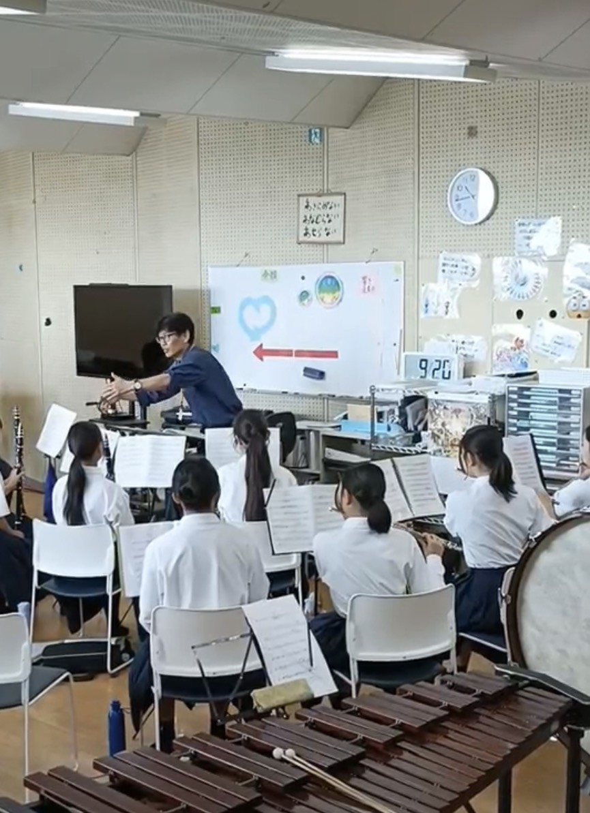
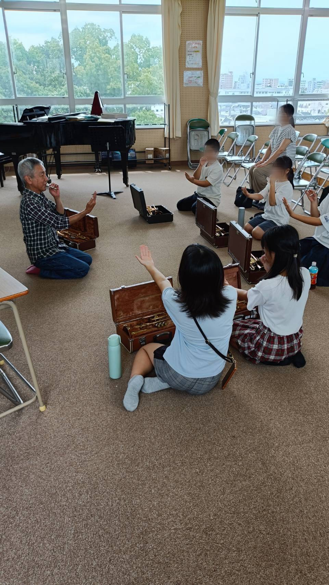
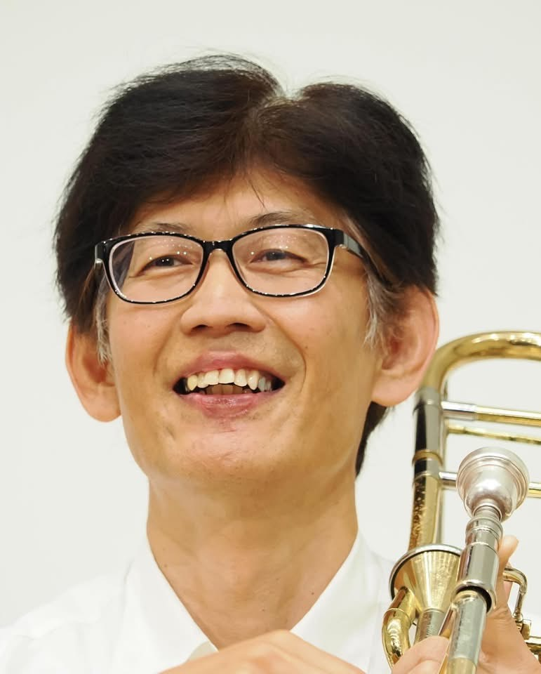

🎺 伊丹市立北中学校を拠点として活動する地域クラブです！ 🎷
ITAMI CHUO Symphonic Bandは、
伊丹市の中学生及び小学６年生を対象とした地域クラブです。
音楽が好きな仲間を募集しています。
初心者・経験者歓迎。
楽器経験がない方も歓迎します。
活動の様子


募集対象
- 伊丹市内の中学生及び小学６年生
- 吹奏楽に興味がある人
活動内容（予定）
- 伊丹市吹奏楽連盟主催定期演奏会（７月）
- 吹奏楽コンクール（７月）
- 地域などからの依頼演奏
- 吹奏楽の集い（９月）３年生引退
活動日
＊活動開始日は現在、学校と調整中です。
- 毎週月・火・木・金曜日 ５時～７時
- 毎週土曜日 ９時～１２時
- 演奏会前には、臨時練習があることがあります。
地域による指導となりますので、急遽、練習を中止する場合もあります。
その場合は、事前に連絡します。
指導者

代表及び指導者 小宮 正照
伊丹シティフィルハーモニー管弦楽団・宝塚市吹奏楽団
トロンボーン奏者
吹奏楽コンクール小学校・中学校・一般の部で全国大会出場を経験。
吹奏楽・オーケストラ・アンサンブルなど幅広く活動を行っている。
アドバイザー兼 定期講師（指導者） 椋尾 豊
伊丹市内の小学校・中学校で吹奏楽部を数多く指導。
その他、必要に応じて講師及びボランティアを依頼します。
会費
-
入会費２，０００円
（保険・地域クラブ関係諸費用に充当します。）
-
月会費５，０００円
（講師料・楽譜購入・楽器修繕などに充当します。）
-
コンクールなどの参加費用について、
別途徴収することがあります。
よくある質問
-
Q 北中学校以外の方でも入会できますか。
A 入会はできますが、ご自身で北中学校まで来れる方に限ります。
（通いやすい地域クラブをお選びください。）
-
Q 楽器はいりますか。
A 学校の楽器が使用できます。
-
Q 楽器の消耗品（リード）は自己負担ですか。
A 会費から支出を基本としますが、会計状況によってはご負担をお願いすることがあります。
-
Q 保護者の役割などはありますか。
A 連絡などをお願いするほか、車だしや付き添いをお願いすることがありますが、負担がない範囲でのお願いになります。
-
Q 参加はできるときでいいですか。
A 楽器の習得には毎日の努力が必要ですので、やむを得ない場合を除き、原則は参加でお願いします。
入会の手続き
入会届をダウンロードいただき、提出ください。